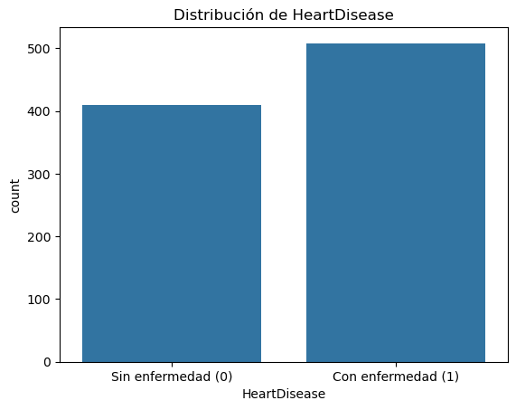
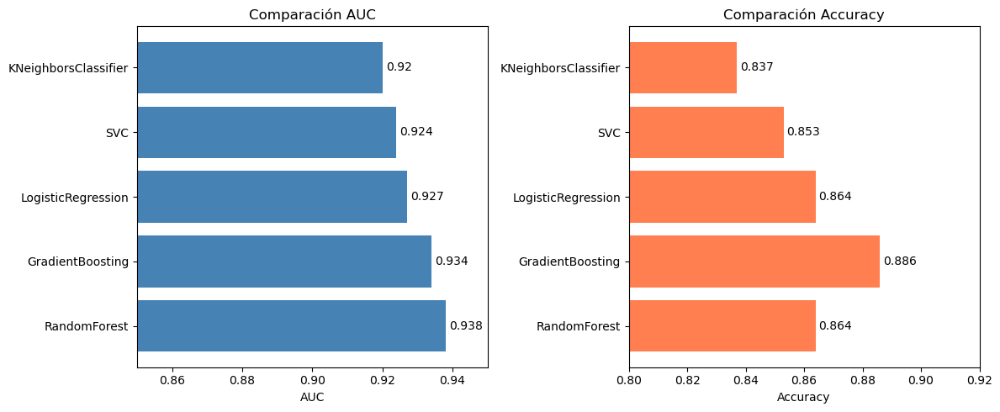

ETAPA 1: Preprocesamiento y detección de Data Leakage#
import pandas as pd
import numpy as np
import matplotlib.pyplot as plt
import seaborn as sns
from sklearn.model_selection import train_test_split, GridSearchCV
from sklearn.pipeline import Pipeline
from sklearn.preprocessing import MinMaxScaler, StandardScaler
from sklearn.svm import SVC
from sklearn.linear_model import LogisticRegression
from sklearn.ensemble import RandomForestClassifier, GradientBoostingClassifier
from sklearn.neighbors import KNeighborsClassifier
from sklearn.metrics import roc_auc_score, accuracy_score
import warnings
warnings.filterwarnings('ignore')
# Carga de datos
df = pd.read_csv("../data/heart.csv")
# Primeras filas
print("Forma del dataset:", df.shape)
df.head()
Forma del dataset: (918, 12)
| Age | Sex | ChestPainType | RestingBP | Cholesterol | FastingBS | RestingECG | MaxHR | ExerciseAngina | Oldpeak | ST_Slope | HeartDisease | |
|---|---|---|---|---|---|---|---|---|---|---|---|---|
| 0 | 40 | M | ATA | 140 | 289 | 0 | Normal | 172 | N | 0.0 | Up | 0 |
| 1 | 49 | F | NAP | 160 | 180 | 0 | Normal | 156 | N | 1.0 | Flat | 1 |
| 2 | 37 | M | ATA | 130 | 283 | 0 | ST | 98 | N | 0.0 | Up | 0 |
| 3 | 48 | F | ASY | 138 | 214 | 0 | Normal | 108 | Y | 1.5 | Flat | 1 |
| 4 | 54 | M | NAP | 150 | 195 | 0 | Normal | 122 | N | 0.0 | Up | 0 |
df.info()
df.describe()
<class 'pandas.core.frame.DataFrame'>
RangeIndex: 918 entries, 0 to 917
Data columns (total 12 columns):
# Column Non-Null Count Dtype
--- ------ -------------- -----
0 Age 918 non-null int64
1 Sex 918 non-null object
2 ChestPainType 918 non-null object
3 RestingBP 918 non-null int64
4 Cholesterol 918 non-null int64
5 FastingBS 918 non-null int64
6 RestingECG 918 non-null object
7 MaxHR 918 non-null int64
8 ExerciseAngina 918 non-null object
9 Oldpeak 918 non-null float64
10 ST_Slope 918 non-null object
11 HeartDisease 918 non-null int64
dtypes: float64(1), int64(6), object(5)
memory usage: 86.2+ KB
| Age | RestingBP | Cholesterol | FastingBS | MaxHR | Oldpeak | HeartDisease | |
|---|---|---|---|---|---|---|---|
| count | 918.000000 | 918.000000 | 918.000000 | 918.000000 | 918.000000 | 918.000000 | 918.000000 |
| mean | 53.510893 | 132.396514 | 198.799564 | 0.233115 | 136.809368 | 0.887364 | 0.553377 |
| std | 9.432617 | 18.514154 | 109.384145 | 0.423046 | 25.460334 | 1.066570 | 0.497414 |
| min | 28.000000 | 0.000000 | 0.000000 | 0.000000 | 60.000000 | -2.600000 | 0.000000 |
| 25% | 47.000000 | 120.000000 | 173.250000 | 0.000000 | 120.000000 | 0.000000 | 0.000000 |
| 50% | 54.000000 | 130.000000 | 223.000000 | 0.000000 | 138.000000 | 0.600000 | 1.000000 |
| 75% | 60.000000 | 140.000000 | 267.000000 | 0.000000 | 156.000000 | 1.500000 | 1.000000 |
| max | 77.000000 | 200.000000 | 603.000000 | 1.000000 | 202.000000 | 6.200000 | 1.000000 |
sns.countplot(x='HeartDisease', data=df)
plt.title('Distribución de HeartDisease')
plt.xticks([0, 1], ['Sin enfermedad (0)', 'Con enfermedad (1)'])
plt.show()
print(df['HeartDisease'].value_counts())
print(df['HeartDisease'].value_counts(normalize=True).mul(100).round(1))

HeartDisease
1 508
0 410
Name: count, dtype: int64
HeartDisease
1 55.3
0 44.7
Name: proportion, dtype: float64
df_encoded = pd.get_dummies(df, columns=['Sex', 'ChestPainType',
'RestingECG', 'ExerciseAngina',
'ST_Slope'])
print("Forma después de encoding:", df_encoded.shape)
df_encoded.head()
Forma después de encoding: (918, 21)
| Age | RestingBP | Cholesterol | FastingBS | MaxHR | Oldpeak | HeartDisease | Sex_F | Sex_M | ChestPainType_ASY | ... | ChestPainType_NAP | ChestPainType_TA | RestingECG_LVH | RestingECG_Normal | RestingECG_ST | ExerciseAngina_N | ExerciseAngina_Y | ST_Slope_Down | ST_Slope_Flat | ST_Slope_Up | |
|---|---|---|---|---|---|---|---|---|---|---|---|---|---|---|---|---|---|---|---|---|---|
| 0 | 40 | 140 | 289 | 0 | 172 | 0.0 | 0 | False | True | False | ... | False | False | False | True | False | True | False | False | False | True |
| 1 | 49 | 160 | 180 | 0 | 156 | 1.0 | 1 | True | False | False | ... | True | False | False | True | False | True | False | False | True | False |
| 2 | 37 | 130 | 283 | 0 | 98 | 0.0 | 0 | False | True | False | ... | False | False | False | False | True | True | False | False | False | True |
| 3 | 48 | 138 | 214 | 0 | 108 | 1.5 | 1 | True | False | True | ... | False | False | False | True | False | False | True | False | True | False |
| 4 | 54 | 150 | 195 | 0 | 122 | 0.0 | 0 | False | True | False | ... | True | False | False | True | False | True | False | False | False | True |
5 rows × 21 columns
X = df_encoded.drop('HeartDisease', axis=1)
y = df_encoded['HeartDisease']
print("X shape:", X.shape)
print("y shape:", y.shape)
X shape: (918, 20)
y shape: (918,)
# PRUEBA CON DATA LEAKAGE
np.random.seed(0)
X_leak = X.copy()
X_leak["leaky_feature"] = y + np.random.normal(0, 0.01, size=len(y))
scaler = MinMaxScaler()
X_scaled = scaler.fit_transform(X_leak)
X_train_l, X_test_l, y_train_l, y_test_l = train_test_split(
X_scaled, y, test_size=0.2, random_state=42)
grid_l = GridSearchCV(SVC(probability=True),
param_grid={"C": [0.1, 1, 10],
"gamma": [0.01, 0.1]},
cv=5, scoring="roc_auc")
grid_l.fit(X_train_l, y_train_l)
auc_leakage = roc_auc_score(y_test_l, grid_l.predict_proba(X_test_l)[:, 1])
print("RESULTADO CON DATA LEAKAGE")
print(f"AUC: {auc_leakage:.3f}")
RESULTADO CON DATA LEAKAGE
AUC: 1.000
# PRUEBA SIN DATA LEAKAGE
X_train, X_test, y_train, y_test = train_test_split(
X, y, test_size=0.2, random_state=42)
pipe_svc = Pipeline([
("scaler", MinMaxScaler()),
("svc", SVC(probability=True))
])
grid = GridSearchCV(pipe_svc,
param_grid={"svc__C": [0.1, 1, 10],
"svc__gamma": [0.01, 0.1]},
cv=5, scoring="roc_auc")
grid.fit(X_train, y_train)
auc_correcto = roc_auc_score(y_test, grid.predict_proba(X_test)[:, 1])
print("RESULTADO SIN DATA LEAKAGE")
print(f"AUC: {auc_correcto:.3f}")
print(f"Mejores parámetros: {grid.best_params_}")
RESULTADO SIN DATA LEAKAGE
AUC: 0.924
Mejores parámetros: {'svc__C': 10, 'svc__gamma': 0.01}
def entrenar_modelo(nombre, pipeline, param_grid, X_train, X_test, y_train, y_test):
grid = GridSearchCV(pipeline, param_grid, cv=5, scoring="roc_auc", n_jobs=-1)
grid.fit(X_train, y_train)
auc = roc_auc_score(y_test, grid.predict_proba(X_test)[:, 1])
acc = accuracy_score(y_test, grid.predict(X_test))
print(f"\n Modelo: {nombre}")
print(f"{'='*45}")
print(f"AUC: {auc:.3f}")
print(f"Accuracy: {acc:.3f}")
print(f"Mejores parámetros: {grid.best_params_}")
return {"Modelo": nombre, "AUC": round(auc, 3), "Accuracy": round(acc, 3)}
resultados = []
# SVC
resultados.append({"Modelo": "SVC",
"AUC": round(auc_correcto, 3),
"Accuracy": round(accuracy_score(y_test, grid.predict(X_test)), 3)})
# LogisticRegression
pipe_lr = Pipeline([("scaler", StandardScaler()),
("clf", LogisticRegression(max_iter=1000))])
param_lr = {"clf__C": [0.01, 0.1, 1, 10, 100]}
resultados.append(entrenar_modelo("LogisticRegression", pipe_lr, param_lr,
X_train, X_test, y_train, y_test))
# RandomForestClassifier
pipe_rf = Pipeline([("scaler", MinMaxScaler()),
("clf", RandomForestClassifier(random_state=42))])
param_rf = {"clf__n_estimators": [50, 100, 200],
"clf__max_features": [3, 5, 7]}
resultados.append(entrenar_modelo("RandomForest", pipe_rf, param_rf,
X_train, X_test, y_train, y_test))
# KNeighborsClassifier
pipe_knn = Pipeline([("scaler", MinMaxScaler()),
("clf", KNeighborsClassifier())])
param_knn = {"clf__n_neighbors": [3, 5, 7, 9],
"clf__weights": ["uniform", "distance"]}
resultados.append(entrenar_modelo("KNeighborsClassifier", pipe_knn, param_knn,
X_train, X_test, y_train, y_test))
# GradientBoostingClassifier
pipe_gb = Pipeline([("scaler", StandardScaler()),
("clf", GradientBoostingClassifier(random_state=42))])
param_gb = {"clf__n_estimators": [50, 100, 200],
"clf__learning_rate": [0.01, 0.1, 0.2]}
resultados.append(entrenar_modelo("GradientBoosting", pipe_gb, param_gb,
X_train, X_test, y_train, y_test))
Modelo: LogisticRegression
=============================================
AUC: 0.927
Accuracy: 0.864
Mejores parámetros: {'clf__C': 0.01}
Modelo: RandomForest
=============================================
AUC: 0.938
Accuracy: 0.864
Mejores parámetros: {'clf__max_features': 3, 'clf__n_estimators': 100}
Modelo: KNeighborsClassifier
=============================================
AUC: 0.920
Accuracy: 0.837
Mejores parámetros: {'clf__n_neighbors': 9, 'clf__weights': 'distance'}
Modelo: GradientBoosting
=============================================
AUC: 0.934
Accuracy: 0.886
Mejores parámetros: {'clf__learning_rate': 0.2, 'clf__n_estimators': 50}
# RANKING COMPARATIVO DE MODELOS
ranking = pd.DataFrame(resultados).sort_values("AUC", ascending=False)
ranking = ranking.reset_index(drop=True)
ranking.index += 1
print("\n RANKING DE MODELOS")
print(ranking.to_string())
RANKING DE MODELOS
Modelo AUC Accuracy
1 RandomForest 0.938 0.864
2 GradientBoosting 0.934 0.886
3 LogisticRegression 0.927 0.864
4 SVC 0.924 0.853
5 KNeighborsClassifier 0.920 0.837
fig, axes = plt.subplots(1, 2, figsize=(12, 5))
# Gráfica AUC
axes[0].barh(ranking['Modelo'], ranking['AUC'], color='steelblue')
axes[0].set_xlim(0.85, 0.95)
axes[0].set_title('Comparación AUC')
axes[0].set_xlabel('AUC')
for i, v in enumerate(ranking['AUC']):
axes[0].text(v + 0.001, i, str(v), va='center')
# Gráfica Accuracy
axes[1].barh(ranking['Modelo'], ranking['Accuracy'], color='coral')
axes[1].set_xlim(0.80, 0.92)
axes[1].set_title('Comparación Accuracy')
axes[1].set_xlabel('Accuracy')
for i, v in enumerate(ranking['Accuracy']):
axes[1].text(v + 0.001, i, str(v), va='center')
plt.tight_layout()
plt.savefig('../notebooks/ranking_modelos.png')
plt.show()

Análisis Etapa 1#
El modelo con data leakage obtuvo un AUC de 1.000, mientras que el modelo sin leakage obtuvo un AUC de 0.924, mostrando un resultado más honesto y real.
Luego de comparar cada modelo y hacer un ranking, se concluye que el de mejor resultados es el RandomForest con AUC de 0.938.
Todos los modelos fueron entrenados correctamente usando Pipeline + GridSearchCV, evitando data leakage.
El uso de Pipeline garantiza que el escalado ocurra dentro de la validación cruzada en cada fold.